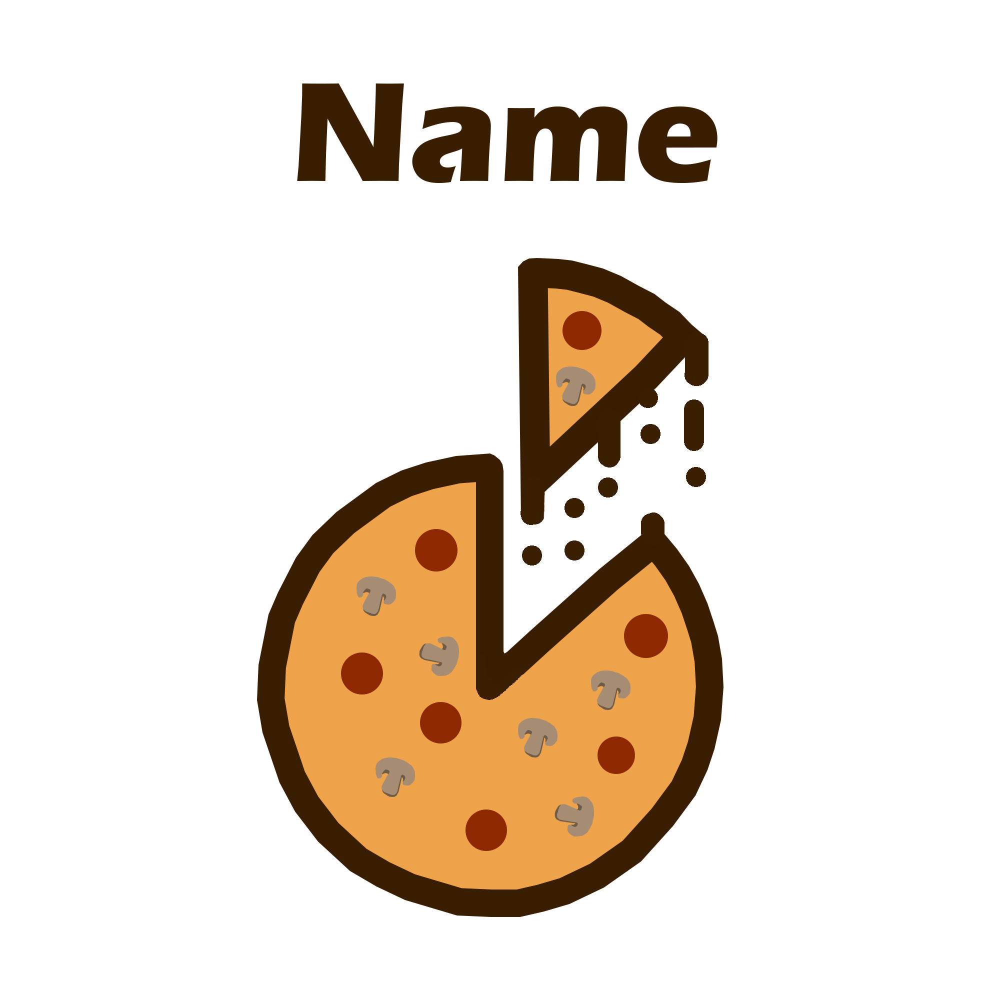
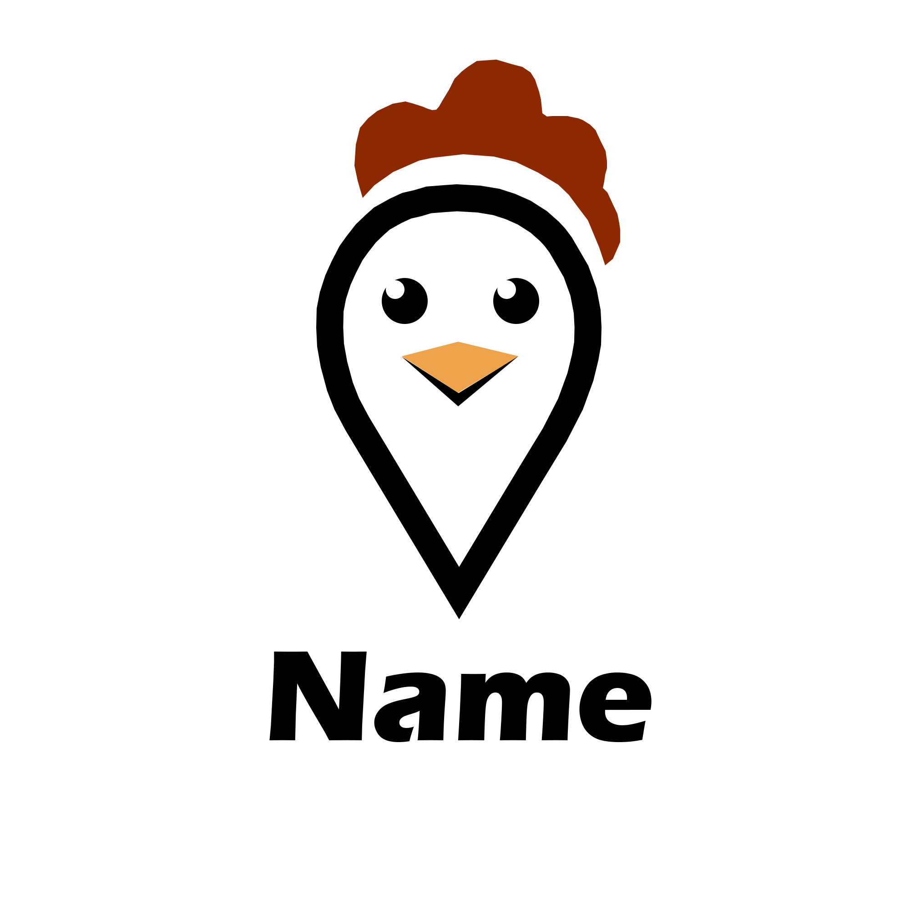

Website Created using HTML, CSS, Javascript and jQuery.
About this website...
This website was created during my time at university for a family member. The intention for this website is
to allow the company to inform their local community about the takeaway and have the menu as well as contact
information available. There are plan being created for the design of this website to be updated. I am currently
working closely with the owner of the business to help them decide on a redesign.
I created this website so that I could share my pokemon card collection with my YouTube viewers. I decided that
to ensure a easyset up and maintainace I would make this website using Wordpress. This allowed me to create the
website with speed and have it available to viewers to visit. Using wordpress has also allowed me to update my
collection without any coding. I have been planning to redesign this website but am still working on the design.
During early 2019 I was approached by a family friend to help them create a website to help them promote their
cafe shop. However, there was a few huddles that I had to work through. As this client was based in Hong Kong,
there was a time difference issue which sometimes made it longer for me to be able to communciate with the client
as most of the time when I am working it is night time for the client. But also due to the distance I was only able
to communicate with my client through video conference or emails making it sometimes harder to get instant response.
Unfortuately the client has had to close business but has allowed me to use the files from the website in my portfoilo.
For this website Javascript, HTML and CSS was used, this website also uses PHP and SQL.
About this website...
During my time at university I had a crazy business idea which I wasn't able to make possible. Instead I decided to
use this idea and create a website from it. This website was created during my third year of uni during a time were I
was using free time to develop on my website design and development skills. Since then I have not had a chance to look
back on it but I hope I will get a chance soon to develop this more using skills I have developed since.
This website was created using PHP, HTML, CSS, Javascript and jQuery.
About this website...
This is a template website I created recently using skills which I have developed throughout my time as a freelance
website design and developer. The data from this webiste is all made up so that I could make the website more real.
I am currently also working on further designs which I will be sharing very soon.
jQuery, Javascript, HTML and CSS where all used to make this website.
About this website...
This website was a recreation from a website I created for a client who was happy for me to use the files for the website
but asked that I used incorrect data inside it. This is a very simple website design but for the business that this site
was for it linked perfectly with their business mission statement.
Logo Design


Angel is able to bring out ideas that us as client wouldn't think about, she also is happy
to provide her ideas to help make the final product better. Where she thinks is needed she
will provide live example on any ideas. She will also offer frequent updates on the project
and ensure that we feel involved in the final project. Having a website has also allowed
our business to grow further as customers have been able to access our menu and contact
details straight from the internet. When given any questions she will provide answers which
are both professional but also easy to understand often using illistrations or sometimes filming
an video to explain it. We could feel that she is very passionate with the projects she works on
and have recommended her to other people.
- Mr T S Tang (Owner of Yummy Yummy Chinese Takeaway)
When I first approached Angel with the project she was very excited to work with us to create something
that could help our business. Since our first meeting with her, she was very professional and was very
happy to provide advice where she thought was needed. Eventhough we are located almost 6,000 miles away
with different time zone she was always very happy to answer our questions and requests as soon as she
can, even if it is at 3 am in the morning in the UK
- Katie Cheung (Owner of Katie's Cafe)
Working with Angel is always a pleasure, she is very passionate about her work and puts maximum effort
into any projects that is given to her. She will be willing to take on tasks that aren't always within
her role and will learn the skill quickly and complete the task. She has also often completed her tasks
ahead of schedule and uses the time remaining to see where she can create the final product to be better.
- Jack Richardson (Graphic Designer)
Angel is very dedicated to her projects, when I work with her I can always be sure that she will be
able to provide she skills and be willing to help solve problems that may appear. Working with her
on the project for Yummy Yummy Chinese also allowed me to see how she conducts meetings with the
client, where she was happy to offer her opinion on what she thinks will work and the importance
on making sure that the webiste is user friendly.


{kind=link}